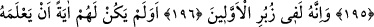
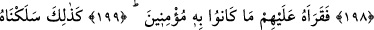

KUR’AN ÂLEMLERİN
RABBİNİN İNDİRMESİDİR
192. Muhakkak ki o (Kur’an) âlemlerin Rabbinin indirmesidir.
193. (Rasûlüm!) Onu Rûhu’l-emîn (Cebrail) indirdi.
194. Senin kalbine; uyarıcılardan olman için,
195. Apaçık Arapça bir dille.
196. O, şüphesiz daha öncekilerin kitaplarında da vardır.
197. Benî İsrail bilginlerinin onu bilmesi, onlar için bir delil değil midir?
198. Biz onu Arapça bilmeyenlerden birine indirseydik de,
199. Bunu onlara o okusaydı, yine ona iman etmezlerdi.
200. Onu günahkârların kalplerine böyle soktuk.
201. Onun için, acıklı azâbı görünceye kadar ona iman etmezler.
202. İşte bu (azap) onlara, kendileri farkında olmadan, ansızın geliverecektir.
203. O zaman: “Bize (iman etmemiz için) mühlet verilir mi acaba?”
diyeceklerdir.